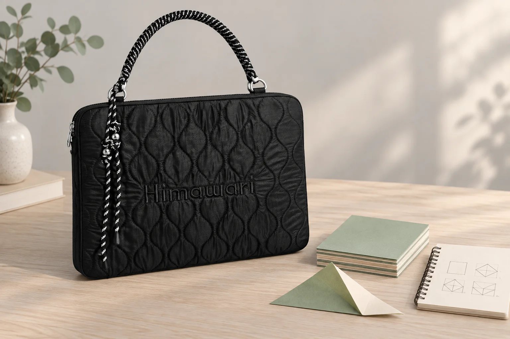
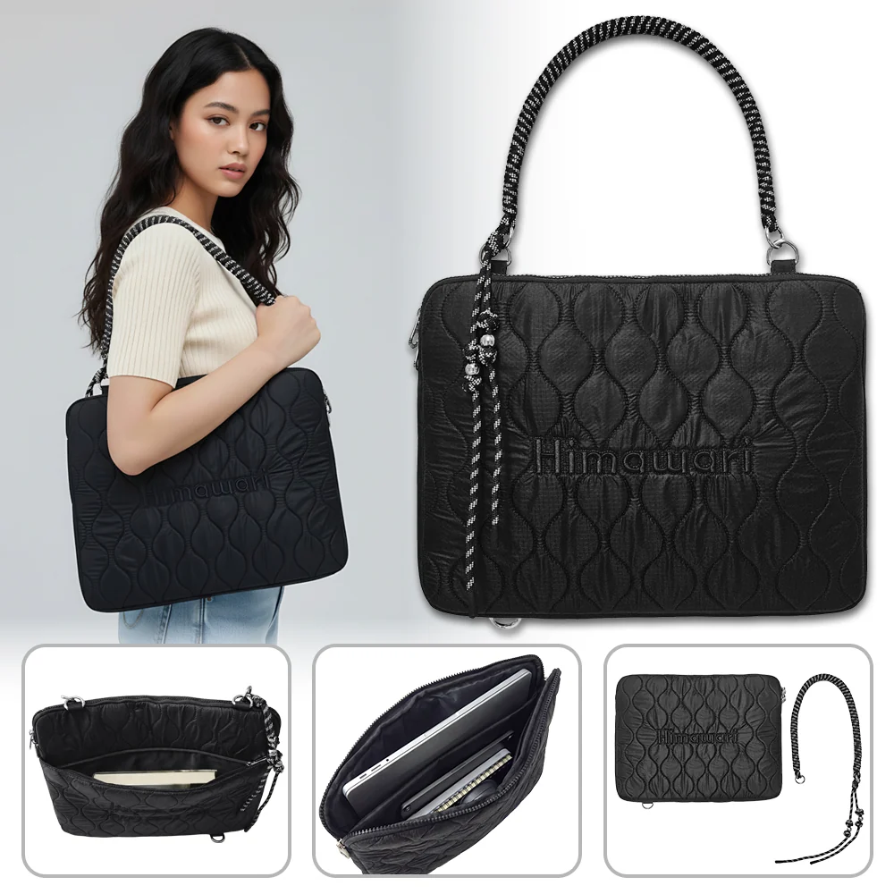

검정 노트북 가방, 같은 색 무늬와 끈을 함께 보기

검정 노트북 가방을 고를 때 색 하나를 정하고 나면 선택이 끝난 것처럼 느껴질 수 있습니다. 같은 검정 바탕 위에 어떤 무늬가 남는지, 끈에는 다른 색이 있는지 보면 비교할 요소가 더 보입니다. 큰 색 면을 늘리지 않고 표면의 선으로 형태가 생기는 가방도 있습니다. 이런 디자인에서는 무늬와 끈이 각각 어느 부분을 맡는지 나누어 살펴볼 수 있습니다.
평소 검정 옷을 자주 입는다면 가방까지 같은 색으로 이어갈지 생각하게 됩니다. 같은 검정이라도 표면의 무늬가 드러나는 쪽을 좋아할 수 있고 넓은 면이 단순하게 남는 쪽을 고를 수도 있습니다. 가방을 옷에 완전히 섞고 싶은지, 가까이에서 무늬가 보이는 정도를 원하는지 정해봅니다. 색상 이름 한 단어로는 설명하기 어려운 차이입니다.
검정 선이 검정 면 위에 남는 방식
Himawari No.2513 블랙의 원본 사진에는 바느질선처럼 보이는 굽은 물결선이 본체 전면에 반복됩니다. 가운데에는 검정색 Himawari 글자가 놓여 있습니다. 바탕과 선, 글자가 모두 검정 계열이라 큰 색 대비보다 윤곽으로 읽히는 구성입니다. 표면의 어느 부분이 밝게 보이는지는 사진마다 다르지만, 반복되는 굽은 선과 가운데 글자의 위치를 함께 살펴볼 수 있습니다.

무늬를 볼 때에는 선 하나의 모양과 반복된 전체 면을 나누어 봅니다. 물결 모양 한 개가 마음에 들어도 전면에 반복되었을 때 느껴지는 인상은 다를 수 있습니다. 가운데의 글자가 반복 무늬 속에서 어느 정도 드러나는지도 확인합니다. 큰 로고색을 원하지 않지만 글자의 윤곽은 있는 가방을 찾는 사람이라면 이 조합이 취향과 맞는지 볼 수 있습니다.
가방을 고를 때 표면이 볼록하게 보이는 부분을 소재의 두께나 안쪽 구성으로 곧바로 해석할 필요는 없습니다. 디자인에서 확인할 것은 검정 면 위에 굽은 선이 드러나는 모습입니다. 선 가까이의 밝고 어두운 부분이 전체 무늬를 어느 정도 읽히게 하는지 보면 됩니다. 실제로 만졌을 때의 감각이 중요한 조건이라면 그 부분은 실물에서 따로 확인합니다.
밝은 상의 위에 이 가방을 놓으면 검정 본체의 외곽과 표면 무늬가 함께 비교됩니다. 원본 착용 사진에는 밝은 골지 상의와 청색 하의 위에 검정 가방이 놓여 있습니다. 상의의 곧은 선과 가방의 굽은 선을 나란히 볼 수 있는 장면입니다. 그 조합을 그대로 따라야 하는 것은 아닙니다. 자신의 옷에서도 두 종류의 선이 함께 보이는 모습이 좋은지 살펴볼 자료가 됩니다.
무늬가 거의 없는 옷을 자주 입는다면 가방의 반복선을 눈에 남길 수 있습니다. 옷과 가방 양쪽에 큰 그림이 없어도 가방 표면에 변화가 있는 차림입니다. 반대로 굵은 줄무늬나 무늬가 많은 상의를 입는 날에는 가방의 물결이 얼마나 드러나길 원하는지 생각합니다. 본체가 검정이라는 이유로 모든 무늬 옷에서 같은 인상이 나올 것이라 정하지 않고, 자주 입는 조합으로 비교합니다.
검정·흰색 끈은 본체와 다른 대비를 만든다
원본의 끈에는 검정과 흰색이 섞여 있고, 검정 본체보다 밝게 구별되는 부분이 있습니다. 본체의 무늬가 검정 안에서 보이는 것과 달리 끈은 두 색의 대비를 가집니다. 가방을 볼 때 어느 쪽이 먼저 눈에 들어오는지 살펴봅니다. 반복된 표면 무늬를 좋아해서 고른 후보에서도 끈의 작은 무늬가 더 강하게 느껴질 수 있습니다.
밝은 상의와 함께 보면 끈의 흰 부분이 옷 쪽과 이어지는지 볼 수 있습니다. 어두운 상의와 함께 보면 같은 끈이 별도의 밝은 선으로 드러날 수 있습니다. 이때 끈을 바꾸거나 분리하는 방법을 고민하기 전에 현재 조합 그대로 마음에 드는지 먼저 고릅니다. 사진에 보이는 본체와 끈을 하나의 디자인으로 놓고 비교하면 어떤 부분을 좋아했는지 남기기 쉽습니다.
끈의 작은 반복과 본체의 큰 반복이 함께 있다는 점도 선택 기준입니다. 두 무늬가 모두 보이는 구성이 좋다면 옷 쪽은 넓고 단순한 면으로 남기는 조합을 떠올릴 수 있습니다. 작은 무늬를 여러 곳에 두는 차림을 좋아한다면 평소의 스카프나 상의와 나란히 볼 수 있습니다. 가방에 있는 반복을 없애야 할 요소로 보기보다 어떤 조합에서 계속 쓰고 싶은지 확인합니다.
가방 가운데 글자는 끈과 다른 방식으로 눈에 들어옵니다. 검정 글자의 윤곽을 좋아하는지, 끈의 흰 부분이 그보다 먼저 보이는 모습이 편한지 비교합니다. 장식이 많은지 적은지를 요소의 개수만으로 판단하기는 어렵습니다. 색이 같은 무늬와 색이 나뉜 끈을 구별하면, 자신의 차림에서 어느 쪽이 더 보이는지 구체적으로 말할 수 있습니다.
옷의 표면감이 바뀐 날에도 고를 이유가 남는가
평소 매끈한 셔츠를 자주 입는다면 가방 표면의 굽은 선이 어떻게 보이는지 떠올려봅니다. 골지나 촘촘한 무늬의 옷을 입는 날에는 가방에도 반복이 더해지는 조합을 볼 수 있습니다. 옷과 가방의 표면을 모두 자세히 드러내고 싶은지, 어느 한쪽을 먼저 보고 싶은지 정합니다. 검정이라는 공통점만 남기지 않고 선의 모양과 반복 크기를 함께 비교하는 것입니다.
작은 장신구나 신발의 색까지 한 번에 맞추려 하면 가방에서 고르려던 요소가 흐려질 수 있습니다. 우선 자주 입는 상의 하나와 본체, 끈의 관계를 봅니다. 본체 무늬가 마음에 들고 끈의 대비도 자연스럽게 느껴지면 다른 날의 옷으로 비교를 넓힐 수 있습니다. 어느 조합에서는 끈이 많이 보인다면 그 차이를 받아들일지 생각하면 됩니다. 모든 옷에서 같은 인상을 만들 필요는 없습니다.
후보를 나란히 놓을 때는 아무 무늬 없는 검정 가방과 이 가방을 비교해볼 수 있습니다. 색이 같을 때 반복선과 글자, 검정·흰색 끈 가운데 어떤 요소를 남기고 싶은지 고릅니다. 물건을 넣을 공간이나 기기 적합성을 확인하는 과정과는 다른 선택입니다. 계속 들고 싶은 외형의 이유가 검정색인지, 같은 색 무늬인지, 대비가 있는 끈인지 알아두면 후보를 좁히기 쉽습니다.
No.2513 블랙의 원본을 다시 보면 전면의 굽은 선과 가운데의 검정 글자, 그 위로 이어진 두 색의 끈이 각각 남습니다. 자주 입는 단순한 옷에 그 세 요소를 더하고 싶은지, 표면 무늬가 있는 옷과도 함께 쓰고 싶은지 골라봅니다. 검정 가방 하나를 고르는 데에도 밝은 색을 새로 더하는 방식 외의 선택이 있습니다. 같은 색 안에서 보이는 무늬와 끈의 대비가 마음에 드는 조합을 찾아볼 수 있습니다.